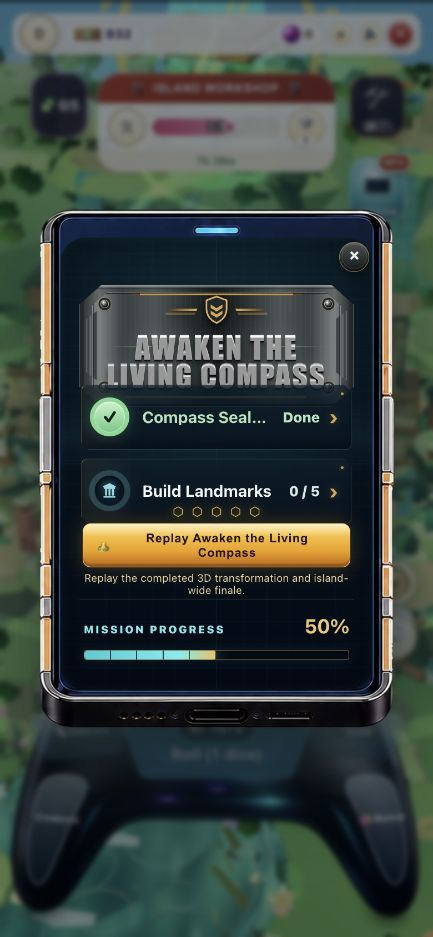
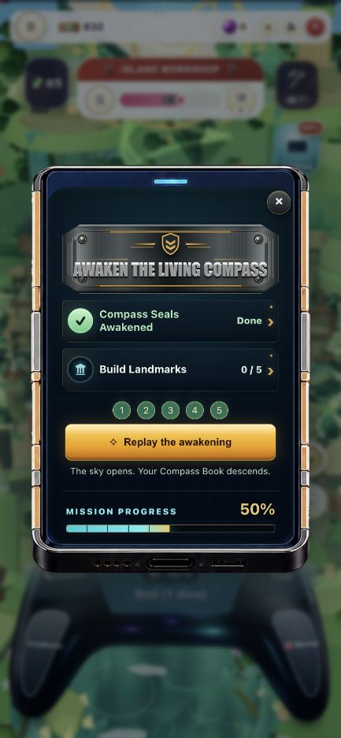
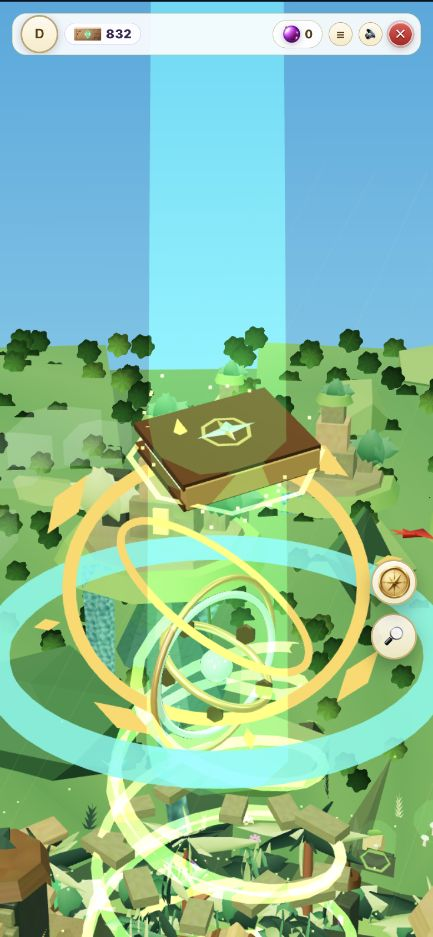
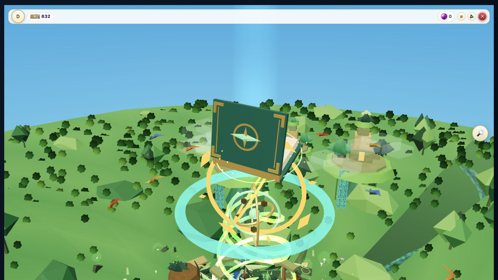
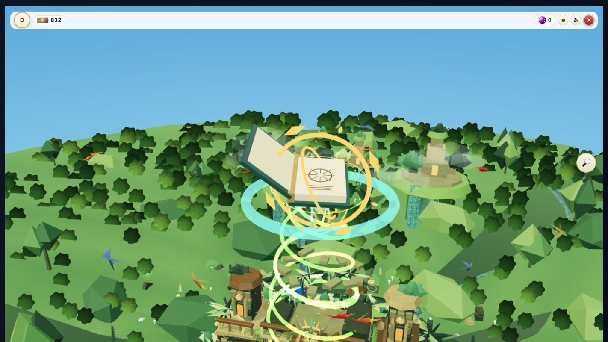
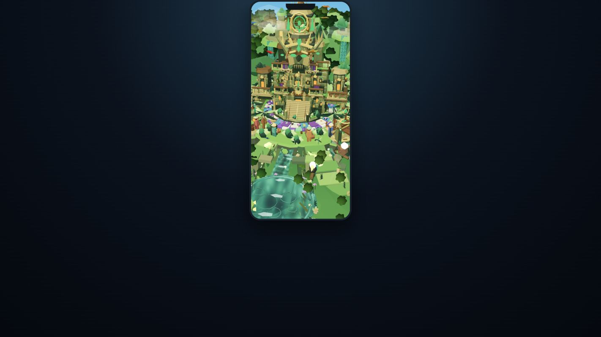
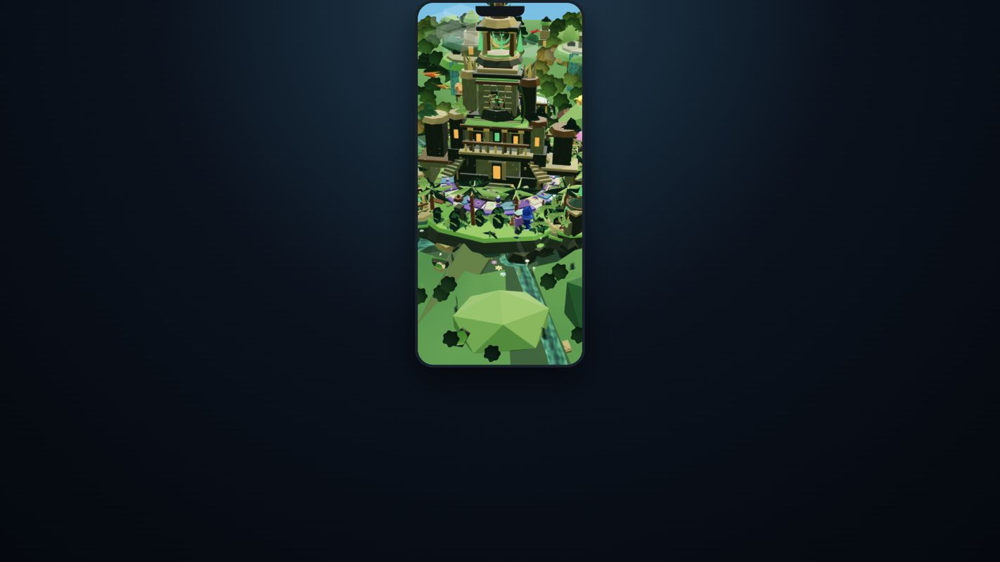
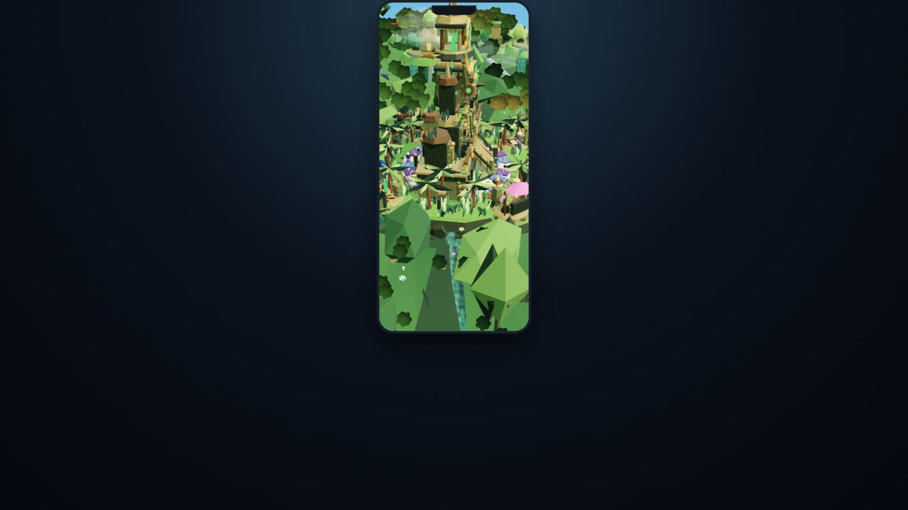
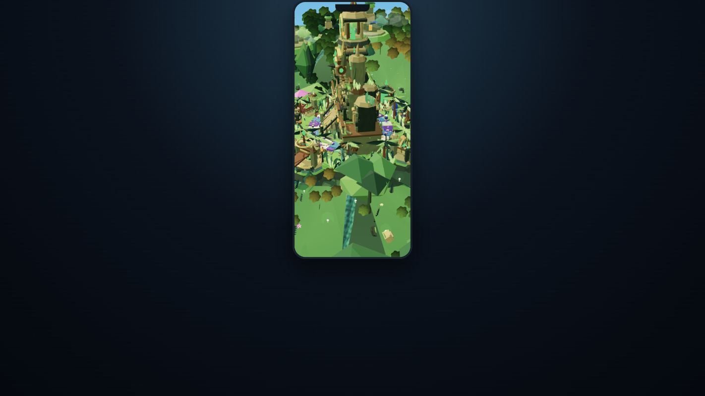

Jungle Expedition: playtest improvements
Runtime Island 008, authored source 018. Real local demo play: five rolls, all five seals, first book receipt, Chapter I, and one complete Hatchery build level.
Mission Phone
Before
Truncated objective, ambiguous seal markers, oversized title and technical replay copy.
After
Full objective names, numbered seals, a compact action and story-led copy. The progress bar remains visible.
Same saved player, completed mission state and capture viewport. No composited game elements.
The Sky Gift
Before: plain closed book
Phone replay near arrival. A hard-edged beam competes with the simple brown cover.
After: decorated, opening book
Desktop replay during opening. Real hinged geometry, gilded corner brackets, an emerald compass crest and a soft-edged animated beam.
The finale frames use different viewport shapes and deliberately different camera positions. The camera now moves continuously, adjusts its arrival distance to screen shape, and holds its final target.

Open-spread detail from the preceding camera-framing iteration; the final camera is closer on desktop and farther back on narrow phones.
Playtest Findings
- The book shortcut appeared before the sky descent ended. It is now hidden during the ceremony, with board input locked until the reveal finishes.
- The receipt named a different first chapter. It now matches the book: The Living Wheel.
- Camera segment boundaries jumped, then rushed away from the gift. Shared endpoints and an arrival hold remove those jumps.
- Replay preserves the saved mission and currency: 832 Money and 1,675 dice remained unchanged across the verified replays.
Still worth improving: distant forest variation, material richness, and the amount of scenery hidden by the shared game controller. This is a focused improvement pass, not a 10/10 claim or a complete island-clear certification.
Original 52 focused regression checks. The release pass adds a deterministic grove test (53 focused checks). The merged behavioral suite passed 2,020 tests, and all Compass Book assertions passed. Architecture guard passes. Full source-branch TypeScript and production build pass; final merged build verification is tracked in the release Gauntlet.
Play the saved local demo
Final Canopy Pass
Connected colour groves and three crown proportions break up the repeated forest pattern without increasing geometry count. These are additional inspection views, not matched before/after frames.

Front inspection.

Rear inspection.

Left inspection.

Right inspection.